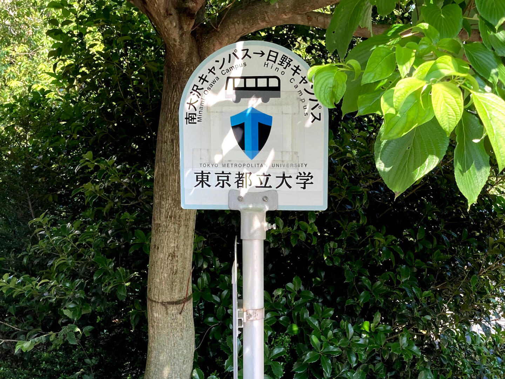
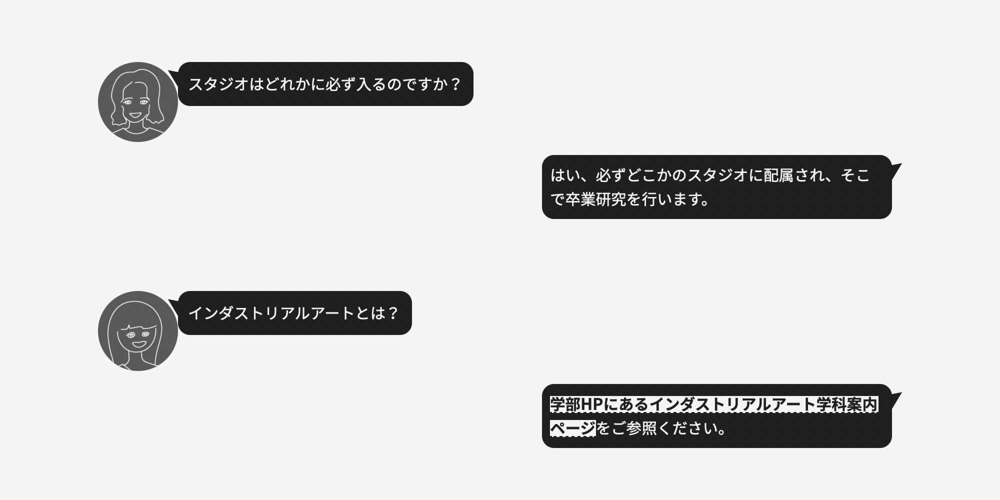

学科紹介
東京都立大学の来場型オープンキャンパスは、事前予約が必要です。詳しくは大学公式サイトの案内をご覧ください。
学科紹介
インダストリアルアート学科・学域は、「プロダクトデザイン」と「メディア創生」の2つのコア・分野を柱に、12のスタジオで構成されています。各スタジオが扱う専門領域は新しいものづくりと情報メディアにまたがって多様に連携しながら、それぞれが最先端の研究を推進し、新しい価値の創造を展開していきます。
スタジオ紹介

インダストリアルアート学科は「プロダクトデザイン」と「メディアアート」の2つのコア・分野を柱に、12のスタジオ（研究室）で構成されています。
卒業生の声
インダストリアルアート学科の教員やOB/OGのインタビューを掲載しています。
卒業生の就職先

IA進路検索では、年度や企業名で卒業生の進路を検索することができます。
よくある質問

FAQページでは、よくある質問を見たり、気になる言葉で検索したりすることができます。